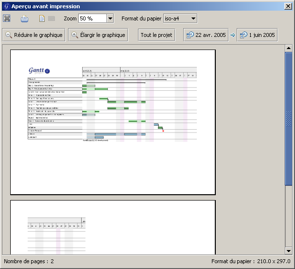

Impression
GanttProject vous permet d'imprimer vos projet.
Aper�u avant impression
- menu Fichier, Aper�u avant impression ;
- ou bouton Aper�u avant impression
 dans la barre d'outils ;
dans la barre d'outils ;
- ou bouton Aper�u avant impression dans le menu contextuel du tableau des t�ches.
Voici la fen�tre d'aper�u :

Par d�faut, la vue propos�e pour l'impression est la m�me que cette dans la vue Gantt, en
ce qui concerne les dates de d�but et de fin du diagramme. De m�me, ce sont les t�ches s�lectionn�es
(s'il y en a) qui seront imprim�es.
Les fonctionnalit�s suivantes sont disponibles :
- orientation de la page
- cliquez sur le bouton Portrait
 pour obtenir l'orientation des pages en portrait ;
pour obtenir l'orientation des pages en portrait ;
- cliquez sur le bouton Paysage
 pour obtenir l'orientation des pages en paysage.
pour obtenir l'orientation des pages en paysage.
- zoom
- la liste d�roulante Zoom permet de choisir le zoom de l'aper�u. Par d�faut
il est � 50 %. Si vous avez beaucoup de pages � imprimer, pour avoir une vue globale de ce
que l'impression va donner, utilisez un zoom inf�rieur.
- format du papier
- Afin d'am�liorer l'aper�u de l'impression, il est possible de sp�cifier le format
du papier que vous voulez utiliser directement lors de l'aper�u.
- Attention si votre imprimante ne supporte pas le papier choisi,
ce qui sera imprim� risque de ne pas correspondre � l'aper�u.
- zone imprim�e
- vous pouvez modifier la zone imprim�e en modifiant les dates de d�but
et de fin concernant l'impression du diagramme de Gantt. Ceci permet d'imprimer
une partie du projet plut�t que sa totalit� par exemple ;
- le bouton Tout le projet permet de fixer la zone d'impression � tout
le projet.
- les boutons R�duire le garphique et Elargir le graphique permettent
de modifier le zoom du projet. De cette fa�on, vous changez l'�chelle du temps et r�duisez
ou �largissez le diagramme.
- imprimer en cliquant sur le bouton Imprimer
 .
.
Impression sans aper�u
- menu Fichier, Imprimer ;
- ou bouton Imprimer dans la barre d'outils ;
- ou bouton Imprimer dans le menu contextuel du tableau des t�ches.
Par d�faut, l'impression se fait sur du papier A4, concerne les t�ches s�lectionn�es et imprime l'ensemble du projet.